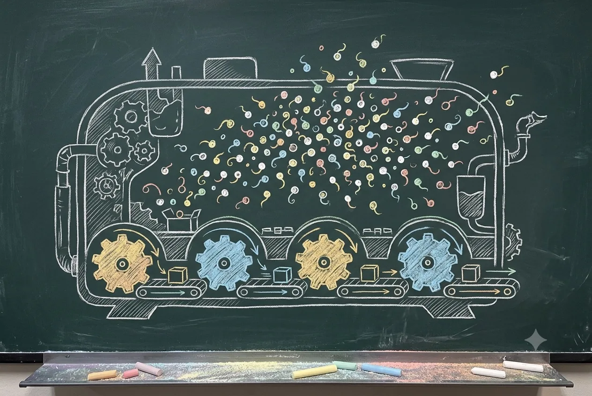

A BookBank Field Guide
The BEAM
Under the Hood
What the Erlang machine actually does when your Elixir runs — and why those choices make LiveView-scale concurrency work.

A warm, characterful editorial illustration in the style of a hand-drawn chalkboard lecture: a large dark green-grey slate board on which someone has chalked the Erlang BEAM virtual machine as a friendly cutaway machine. A few big cog-like "scheduler" wheels along the bottom, each feeding a run-queue conveyor, and above them a great swarm of hundreds of tiny glowing round "process" dots drifting like fireflies. Soft pastel chalk colours over deep slate, hand-lettered feel, generous whitespace, no readable text baked in. ~1350×900px, 3:2 landscape, subject centred with safe margins.
Generate this with your image agent, then drop the file here.
In the voice of Joe Armstrong — plain sentences, homely pictures first (telephone switches, post offices, people posting letters), then the real machinery, and an honest word about what each choice costs. The way to build reliable systems, remember, is to let things crash.
What we'll actually look at
Eight short chapters. Each one is the reason the next one works.
- 01The Process Modelmillions of cheap, isolated things
- 02Schedulers, Reductions & Preemptionfair sharing, counted out
- 03Per-Process Heaps & GCtiny private gardens
- 04Message Passing & Mailboxescopy, don't share
- 05Binaries & the Large-Binary Trapthe one thing we do share
- 06Dirty Schedulers & NIFswhen C won't behave
- 07Distributionnodes talking to nodes
- 08Why LiveView Scalesit all adds up
- ★Cheatsheetthe whole machine on one page
You already ship Elixir. You spawn processes, you write GenServers, you push
updates over LiveView, and it mostly just works. This little book is about the floor you're
standing on — the BEAM, the Erlang virtual machine your code actually runs
inside. We won't do magic. We'll take the lid off, look at the moving parts, and for each one
ask the only two questions that matter: what problem does this solve, and
what does it cost me? Get those and the puzzling symptoms — a stalled scheduler,
memory that won't come down, a slow mailbox — stop being spooky.